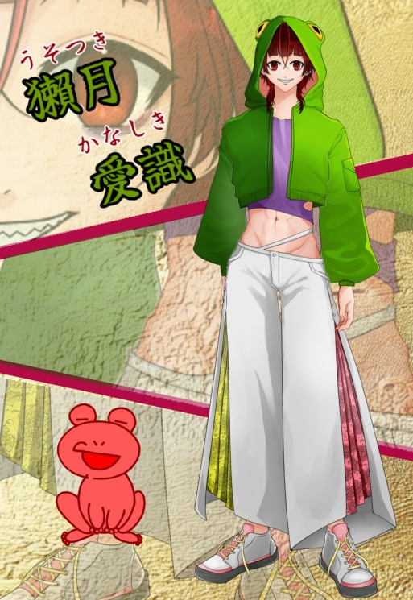
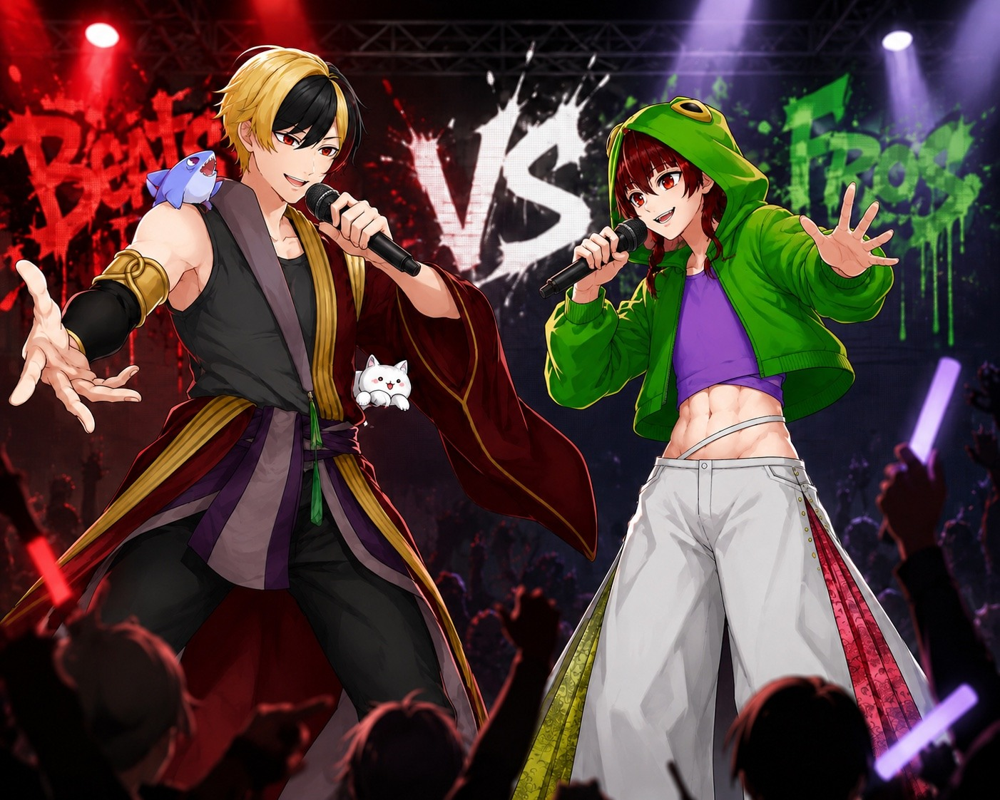

NOW ON AIR
つながる声、
ひろがる世界。
バーチャルの世界で、ラジオのように誰でも気軽に耳を傾けられる場所へ。配信者とリスナーが一緒につくる、V-RE:DUO。
 ふたりでつくる、最高のデュオ！
ふたりでつくる、最高のデュオ！01 / ABOUT
WHAT IS V-RE:DUO?
声を届ける人と、
耳を傾ける人をつなぐ。
V-RE:DUO（ブイレデュオ）は、YouTube配信者、バーチャル配信者、バーチャル音楽配信者の活動を応援し、企画と発信を行うクリエイターグループです。
Virtual、Radio、DUO。ラジオのように身近で、配信者とリスナー、仲間と仲間がやり取りを重ねながら、新しい表現を一緒につくっていきます。
将来的には、配信者が安心して挑戦できる事務所へ成長することを目指しています。
02 / MEMBER
OUR CREATORS
所属ライバー
個性と世界観を尊重し、それぞれの活動を支えます。


COLLABORATION
声と音楽が交わる、V-RE:DUOのステージ。
雑談、歌、ラップ、コラボ企画。異なる個性が出会い、新しいエンターテインメントを生み出します。
03 / MASCOT
OFFICIAL MASCOTS
ハムラジくん＆ラジオッコ
ハムラジくん
元気に声を届ける、小柄なハムスター。マイクとON AIRを担当するムードメーカーです。
ラジオッコ
ラジオを抱えたラッコ。音とつながりを大切にしながら、配信者とリスナーをそっと結びます。
04 / NEWS
LATEST NEWS
お知らせ
沙門 釈迦力、獺月 愛識のプロフィールを掲載しました。
V-RE:DUO公式サイトをリニューアルしました。
今後の企画や活動情報はこちらでお知らせします。
05 / CONTACT